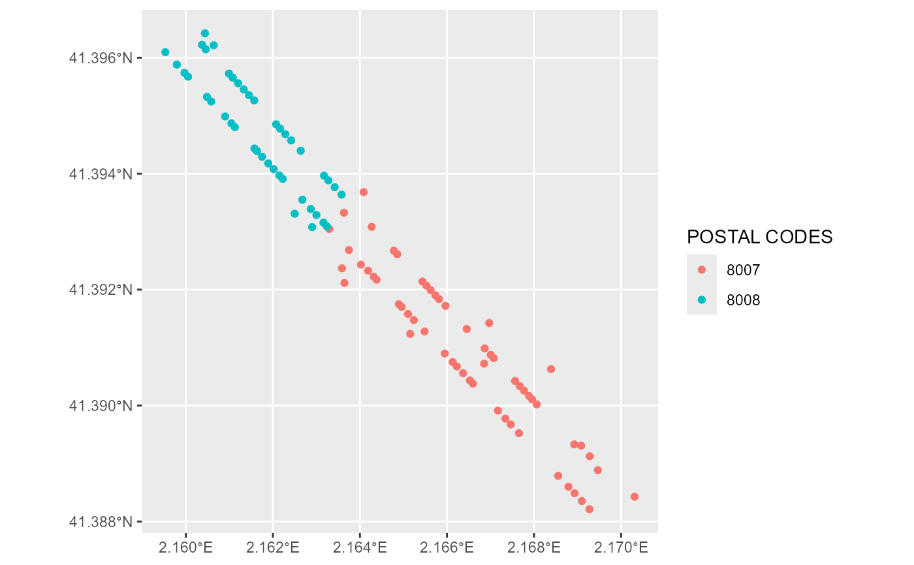

Access the GISCO Address API, that allows to carry out both geocoding and reverse geocoding using a pan-european address database.
Each endpoint available is implemented through a specific function, see Details.
The API supports fuzzy searching (also referred to as approximate string matching) for all parameters of each endpoint.
Usage
gisco_addressapi_search(
country = NULL,
province = NULL,
city = NULL,
road = NULL,
housenumber = NULL,
postcode = NULL,
verbose = FALSE
)
gisco_addressapi_reverse(x, y, country = NULL, verbose = FALSE)
gisco_addressapi_bbox(
country = NULL,
province = NULL,
city = NULL,
road = NULL,
postcode = NULL,
verbose = FALSE
)
gisco_addressapi_countries(verbose = FALSE)
gisco_addressapi_provinces(country = NULL, city = NULL, verbose = FALSE)
gisco_addressapi_cities(country = NULL, province = NULL, verbose = FALSE)
gisco_addressapi_roads(
country = NULL,
province = NULL,
city = NULL,
verbose = FALSE
)
gisco_addressapi_housenumbers(
country = NULL,
province = NULL,
city = NULL,
road = NULL,
postcode = NULL,
verbose = FALSE
)
gisco_addressapi_postcodes(
country = NULL,
province = NULL,
city = NULL,
verbose = FALSE
)
gisco_addressapi_copyright(verbose = FALSE)Arguments
- country
Country code (
country = "LU").- province
A province within a country. For a list of provinces within a certain country use the provinces endpoint (
gisco_addressapi_provinces(country = "LU")).- city
A city within a province. For a list of cities within a certain province use the cities endpoint (
gisco_addressapi_cities(province = "capellen")).- road
A road within a city.
- housenumber
The house number or house name within a road or street.
- postcode
Can be used in combination with the previous parameters.
- verbose
Logical, displays information. Useful for debugging, default is
FALSE.- x, y
x and y coordinates (as longitude and latitude) to be converted into a human-readable address.
Value
A data.frame object in most cases, except gisco_addressapi_search(),
gisco_addressapi_reverse() and gisco_addressapi_bbox(), that return a
sf object.
Details
Brief description of the API endpoints (source GISCO Address API \> Endpoints:
| Endpoint | Description |
/countries | Returns all country codes that are compatible with the address API. Check the coverage map for available countries and see here for a list of official country codes. |
/provinces | Returns all provinces within the specified country. Can also be used to get the province of a specified city. |
/cities | Returns all cities within a specified province or country. |
/roads | Returns all roads or streets within a specified city. |
/housenumbers | Returns all house numbers or names within the specified road. It is possible that in certain countries an address may not have a road component. In this case, if a road is not specified then the number of house numbers returned by the API is limited to 1000. |
/postcodes | Returns all postcodes within the specified address component (Country or Province or City). |
/search | The search endpoint allows structured queries to the address database. Please note that various combinations of each of the parameters can be used in order to retrieve the addresses that share an address component. The API is limited to a maximum of 100 addresses. |
/reverse | The API's reverse theme allows you to specify x and y coordinates in order to retrieve a structured address. |
/bbox | Returns a WKT bounding box for an address component depending on the parameters specified. |
/copyright | Returns the copyright text for each available country in the Address API. |
The resulting object may present the following variables:
| Property name | Description |
LD | Refers to "Locator Designator" and represents the house number part of the address |
TF | Refers to "Thoroughfare" and represents the street or road part of the address |
L0 | Refers to Level 0 of the API administrative levels. Values are country codes consisting of 2 characters. |
L1 | Refers to Level 1 of the API administrative levels. Values are province names. Please note that "province" is a generic term that may differ between countries. |
L2 | Refers to Level 2 of the API administrative levels. Values are town or city names. Please note that "city" is a generic term that may differ between countries. |
PC | Postal Code |
N0 | Refers to "NUTS 0" |
N1 | Refers to "NUTS 1" |
N2 | Refers to "NUTS 2" |
N3 | Refers to "NUTS 3" |
X and Y | Refers to the x and y coordinates of the address point |
OL | Refers to the address' Open Location Code |
Examples
# \donttest{
library(dplyr)
#>
#> Attaching package: 'dplyr'
#> The following objects are masked from 'package:stats':
#>
#> filter, lag
#> The following objects are masked from 'package:base':
#>
#> intersect, setdiff, setequal, union
# Cities in a region
gisco_addressapi_cities(country = "PT", province = "LISBOA") %>%
as_tibble()
#> # A tibble: 133 × 1
#> L2
#> <chr>
#> 1 AJUDA
#> 2 ALCABIDECHE
#> 3 ALCOENTRE
#> 4 ALCÂNTARA
#> 5 ALFRAGIDE
#> 6 ALGUBER
#> 7 ALGUEIRÃO-MEM MARTINS
#> 8 ALVALADE
#> 9 AREEIRO
#> 10 ARRANHÓ
#> # ℹ 123 more rows
# Geocode and reverse geocode with sf objects
library(ggplot2)
# Structured search
struct <- gisco_addressapi_search(
country = "ES", city = "BARCELONA",
road = "GRACIA"
)
struct %>%
ggplot() +
geom_sf(aes(color = PC)) +
labs(color = "POSTAL CODES")

# Reverse geocoding
reverse <- gisco_addressapi_reverse(x = struct$X[1], y = struct$Y[1])
glimpse(reverse)
#> Rows: 5
#> Columns: 14
#> $ LD <chr> "51", "49", "53", "47", "261"
#> $ TF <chr> "PS GRACIA", "PS GRACIA", "PS GRACIA", "PS GRACIA", "CL ARAGO"
#> $ L2 <chr> "BARCELONA", "BARCELONA", "BARCELONA", "BARCELONA", "BARCELON…
#> $ L1 <chr> "CATALUÑA/CATALUNYA", "CATALUÑA/CATALUNYA", "CATALUÑA/CATALUN…
#> $ L0 <chr> "ES", "ES", "ES", "ES", "ES"
#> $ PC <chr> "8007", "8007", "8007", "8007", "8007"
#> $ N0 <chr> "ES", "ES", "ES", "ES", "ES"
#> $ N1 <chr> "ES5", "ES5", "ES5", "ES5", "ES5"
#> $ N2 <chr> "ES51", "ES51", "ES51", "ES51", "ES51"
#> $ N3 <chr> "ES511", "ES511", "ES511", "ES511", "ES511"
#> $ OL <chr> "8FH495R7+WMM", "8FH495R7+VPP", "8FH495R7+XJC", "8FH495R7+VQ6…
#> $ X <dbl> 2.164186, 2.164316, 2.164023, 2.164382, 2.164178
#> $ Y <dbl> 41.39233, 41.39222, 41.39243, 41.39217, 41.39183
#> $ geometry <POINT [°]> POINT (2.164186 41.39233), POINT (2.164316 41.39222), POINT (…
# }